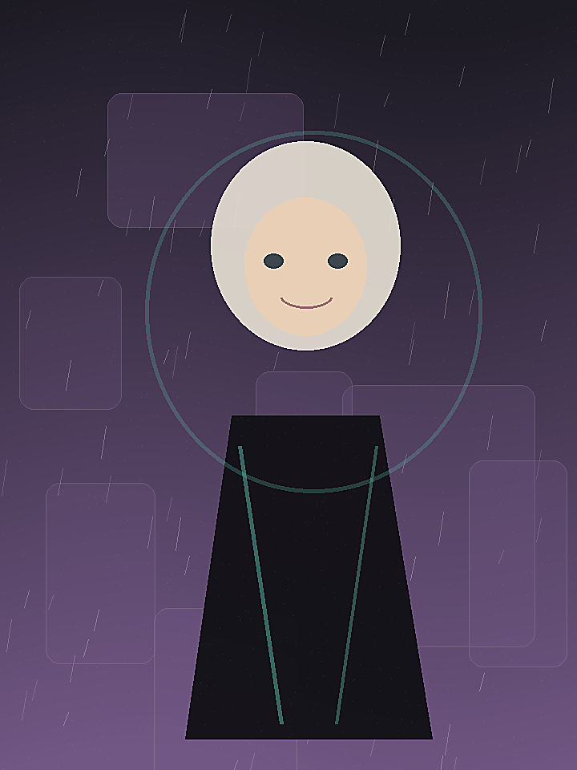
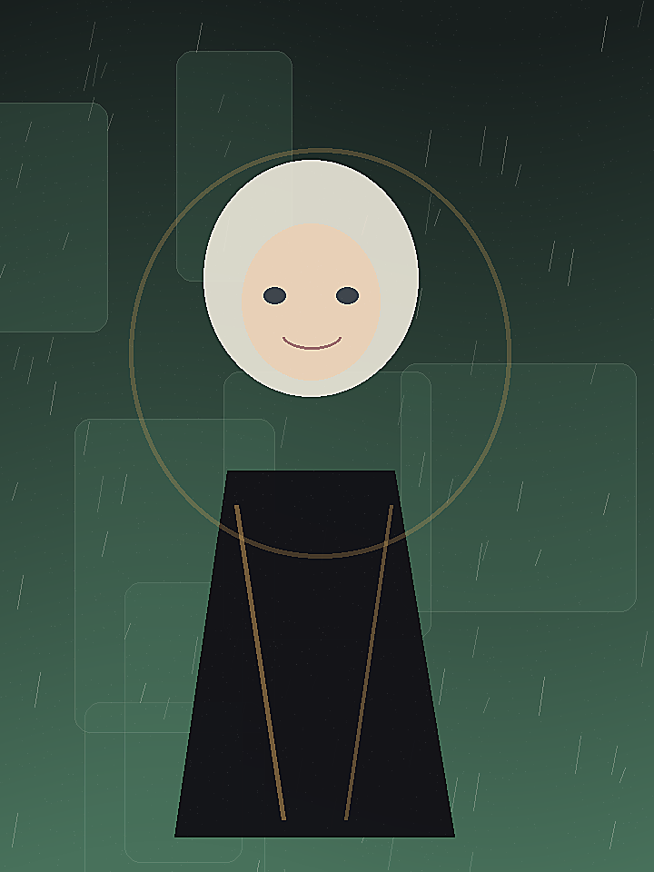
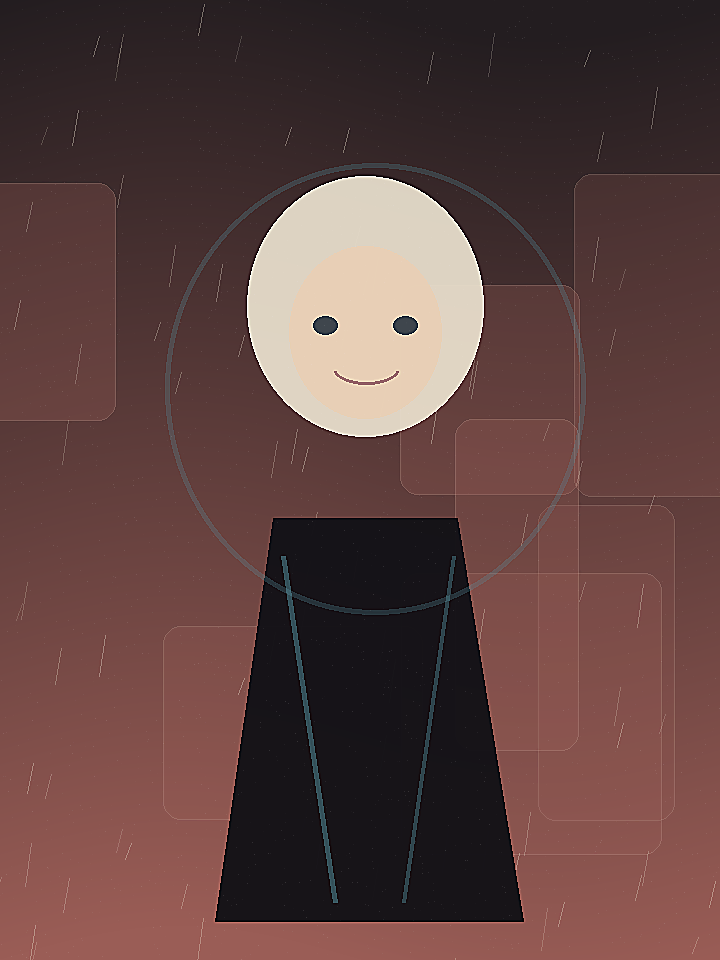
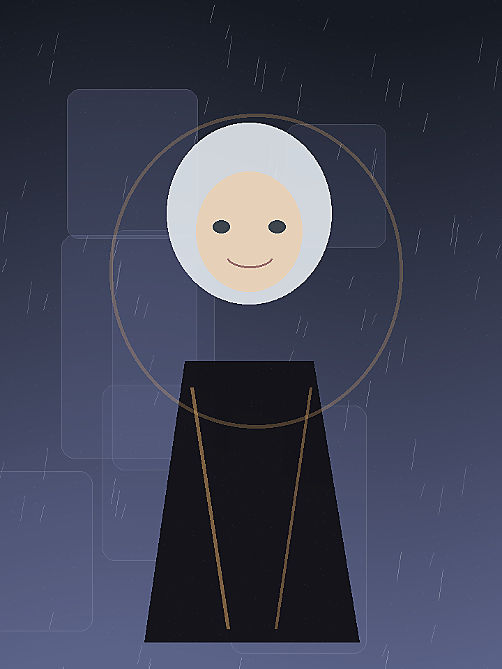
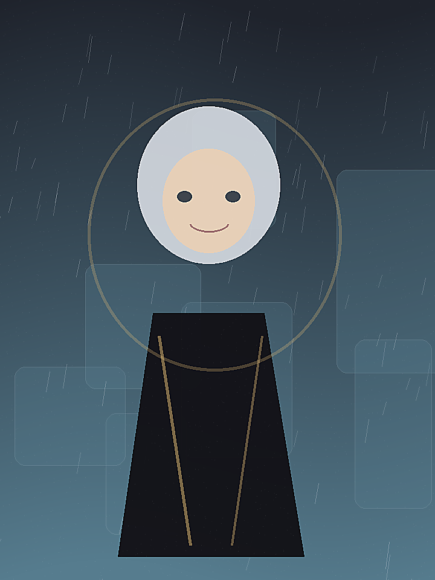
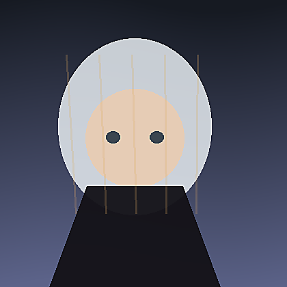
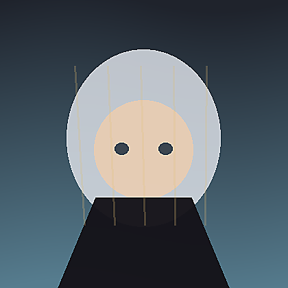

Project / Akiba Character Pack
总览工作台
Local SD: 127.0.0.1:7860
2 jobs running
当前任务
Agent 正在执行自然语言生图和 LoRA 数据质检。
雨夜咖啡馆角色图
txt2img · batch 4 · 68%
silver_aria LoRA 数据质检
42 张图片 · 建议剔除 5 张
模型索引刷新
checkpoint 2 · LoRA 1 · ControlNet 15
系统状态
WebUI在线
GPU82%
ProviderOpenAI
Queue6
最近生成
保留参数、seed 和 Agent 解释，可继续迭代。




快捷入口
自然语言需求
Agent 会转换成 prompt、参数和模型选择。
画一个银发少女，穿黑色礼服，坐在雨夜咖啡馆窗边，精致插画，适合手机壁纸。
已识别为竖版二次元角色图。建议使用 SDXL 动漫模型，开启高清修复和 ADetailer，输出 4 张构图方案。
脸更温柔一点，背景暗一些，不要全身。
Agent 生成方案
所有自动决策都可以编辑或锁定。
模型animagineXL40_v4Opt
LoRAportrait · 0.65
ControlNet无，保持自由构图
理由竖版插画，主体半身，适合 SDXL 动漫模型
生成参数
高清修复开启 · 1.5x
ADetailer开启 · face
参数锁定模型 / 尺寸
生成结果
点击任意图继续改图、放大或炼制样张。
原图与区域
支持手动画蒙版或由 Agent 推荐区域。
背景区域
改图指令
Agent 自动选择 img2img / inpaint / ControlNet。
任务类型局部重绘
保持内容人物脸部 / 姿势 / 礼服
修改区域背景
Denoise0.45
ControlNetDepth · weight 0.75
前后对比
结果保留参数，可继续送入放大或局部重绘。
Before
After

LoRA 炼制向导
从图片导入到标签、训练配置、样张评估和一键安装。
导入
质检
标签
配置
训练
评估
安装
图片质检


42总图片
34推荐使用
5建议剔除
3需裁剪
标签清洗
WD14 生成标签，LLM 删除干扰项并保留角色特征。
silver hairblue eyesblack dresslong hairsoft smileportraitsolohair ornament
训练配置
OptimizerAdamW8bit
CaptionWD14 + LLM cleanup
评估每 2 epochs 出样张
样张评估
角色相似度86
泛化能力78
过拟合风险中低
模型管家
扫描本地 checkpoint、LoRA、VAE、ControlNet，并建立 Agent 用途索引。
名称类型架构推荐用途触发词 / 权重状态
animagineXL40_v4OptCheckpointSDXL二次元 / 插画 / 角色图-可用
anything-v5-PrtRECheckpointSD1.5头像 / 轻量出图-可用
portraitLoRASD1.5人像细节 / 半身构图<lora:portrait:0.65>可用
control_v11p_sd15_openposeControlNetSD1.5姿势控制weight 0.75可用
controlnet++_union_sdxl_promaxControlNetSDXL多控制合一weight 0.65可用
任务队列
统一管理生图、改图、放大、训练和评估任务。
txt2img · 雨夜咖啡馆68% · ETA 01:12GPU 82%
LoRA 质检 · silver_aria42 / 42 imagesCPU
upscale · result_0421等待中VRAM 预估 6GB
Provider 评估 · sample batch失败：API timeout可重试
inpaint · 海边黄昏背景等待中ControlNet depth
资源占用
任务日志
[14:22:10] txt2img started: animagineXL40_v4Opt, 832x1472, batch=4 [14:22:18] ADetailer queued: face_yolov8n [14:23:02] LoRA dataset scan finished: 34 accepted, 5 rejected, 3 need crop [14:23:19] Provider evaluation failed: request timeout after 30s [14:23:25] Queue policy: keep SD jobs running, retry provider later
Provider 列表
用于 prompt、标签、评估和任务规划。
OpenAI Provider
连接测试不会影响本地 WebUI 生图能力。
协议适配策略
OpenAIResponses / Chat Completions · 用于高质量规划和 prompt
OpenAI-compatible统一 base_url + model · 适配本地或第三方网关
LocalOllama / LM Studio / llama.cpp · 离线低成本解析
Claude 类接口Messages 风格 · 用于长文本规划和训练诊断